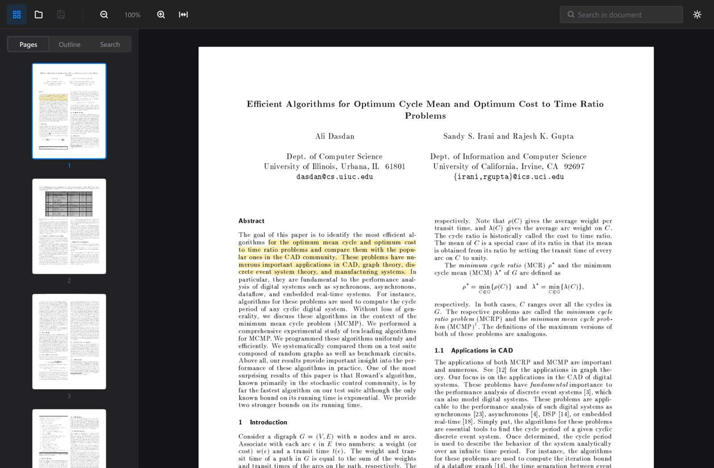
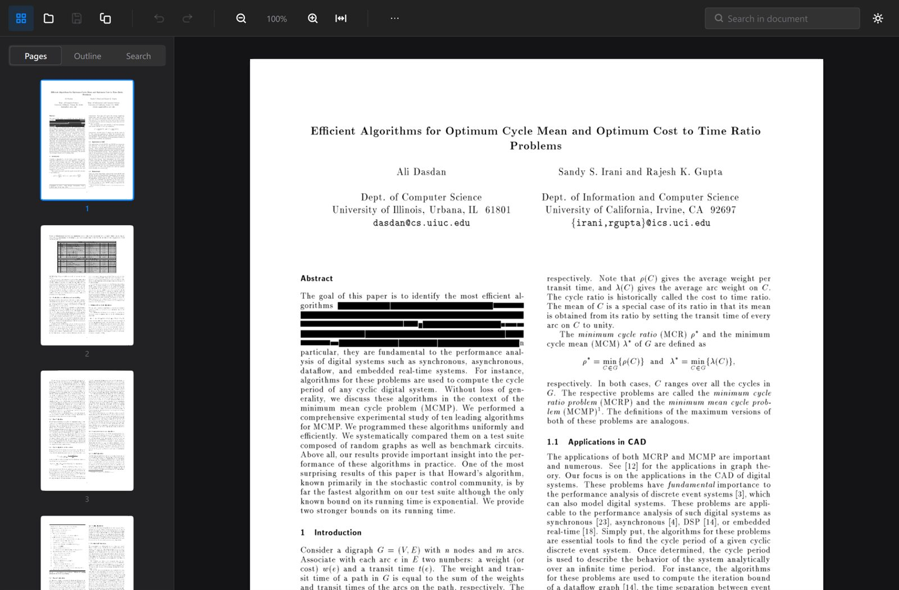
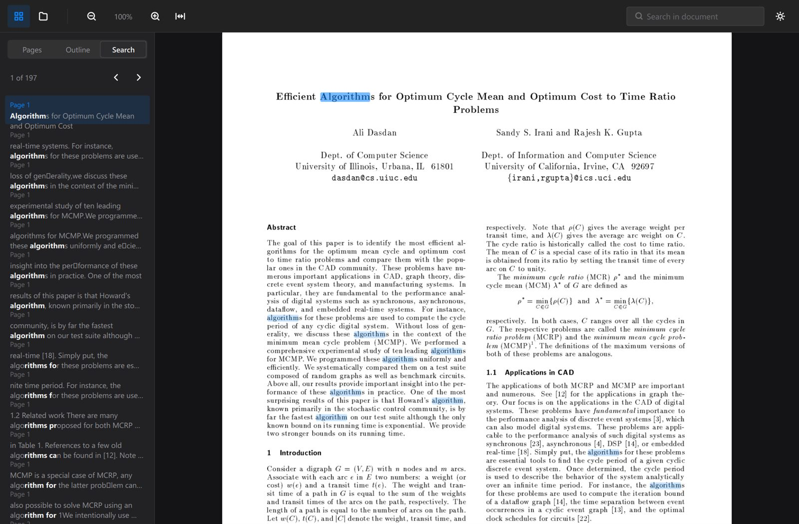
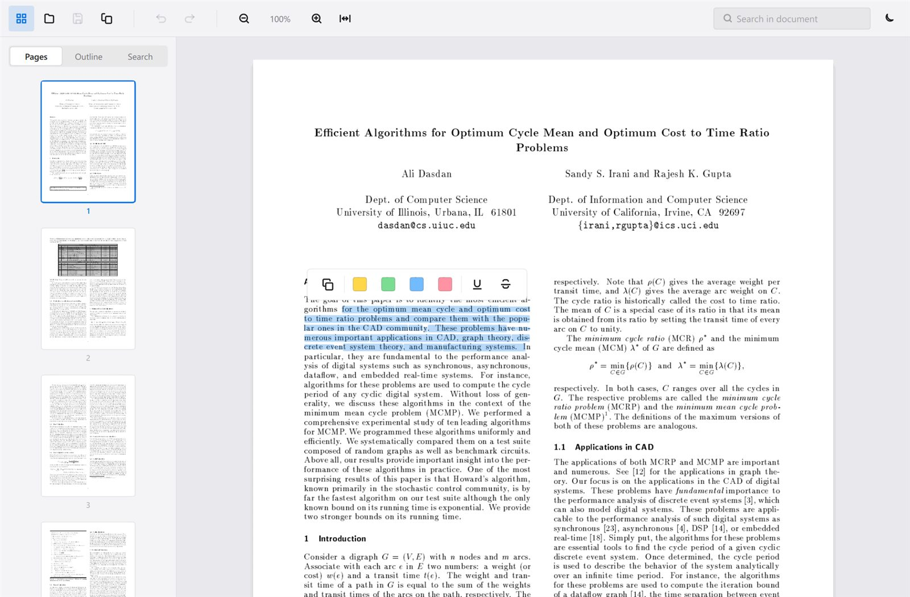

大部分 PDF 軟體只做到其中一件事。SumatraPDF 開得快但不能編輯，Acrobat 什麼都能做卻要等八秒。LumenPDF 想三件都要。 Most PDF software picks one. SumatraPDF is instant but cannot edit. Acrobat does everything and takes eight seconds to show you a page. LumenPDF is an attempt at all three.
Windows 10/11 64 位元 · 安裝檔 41 MB Windows 10/11 64-bit · 41 MB installer

開 1000 頁的文件和開 3 頁的文件，成本幾乎一樣：527 ms 對 536 ms。頁面幾何在開檔時一次算好，渲染完全虛擬化，所以頁數不影響開啟成本。 Opening a 1000-page document costs the same as opening a 3-page one: 527 ms against 536 ms. Page geometry is cached once at load and rendering is fully virtualised, so page count never enters the opening cost.
scripts/benchmark.ps1，跑 5 次取中位數，你可以自己跑一遍。測試機為 RTX 4090、143 Hz、3840×2160。頁面渲染在背景執行緒，GUI 執行緒從不接觸 PDFium——這是捲動不掉幀的原因。
Where the numbers come from: scripts/benchmark.ps1 is in the repository — 5 runs, median, run it yourself. Measured on an RTX 4090 at 143 Hz, 3840×2160. Pages rasterise on a worker pool and the GUI thread never touches PDFium, which is why scrolling holds vsync.
閱讀、標註、整理頁面、填表單、匯出、壓縮。全部可復原，全部有回歸測試守著。 Reading, annotating, page management, forms, export, compression. All undoable, all covered by regression tests.
245 頁、1028 個命中，130 毫秒。結果邊掃邊出現，掃完之前就能用。 1028 matches across 245 pages in 130 ms. Results stream in while the scan is still running.
可折疊的文件大綱，縮圖側欄可直接旋轉、刪除、匯出單頁。 A collapsible outline, and a thumbnail rail where you can rotate, delete or export a page directly.
螢光標記、底線、刪除線，四種顏色。寫出的是標準 PDF 標註，別的軟體讀得到。 Highlight, underline and strike-through in four colours, written as standards-conformant PDF markup other software reads.
直接畫，存成向量路徑而不是點陣圖——放大到 800% 依然銳利。 Draw it. Stamped as vector paths rather than a bitmap, so it stays sharp at any zoom.
點欄位就能打字，文字欄位、核取方塊、單選鈕都支援，存回檔案。 Click a field and type — text fields, checkboxes and radio buttons, written back into the document.
頁面轉圖片、純文字匯出，以及只降取樣「畫得太小卻放太大張」的圖片。 Pages to images, plain text, and a reduced copy that downsamples only images oversized relative to how large they are drawn.
在黑框底下留著文字是最常見的洩密方式——只要複製貼上就露餡。LumenPDF 不是畫黑框，是把該頁點陣化後替換掉，底下什麼都不剩。 A black rectangle drawn over text leaves the text in the file for anyone who copies it out. That is how redaction failures make the news. LumenPDF rasterises the page and replaces its contents, so there is nothing underneath to recover.


很多 PDF 工具在中文上會出現一種難以察覺的錯誤：複製出來的字看起來對，貼到別處卻搜不到——因為抽出的是「康熙部首」區塊的碼位，不是正規漢字。 Many PDF tools have a failure mode in Chinese that is almost impossible to notice: copied text looks right but matches nothing when pasted, because what was extracted are Kangxi-radical lookalikes rather than the real ideographs.
產品頁通常只講好話。這一段講限制，因為你遲早會遇到。 Product pages usually only list wins. This one lists the limits, because you will meet them eventually.
按 Ctrl+E 可以點一段文字直接改。但真實 PDF 幾乎都是子集嵌入字型——只含文件用過的字符。輸入字型裡沒有的字，底層會產生亂碼。 Press Ctrl+E and click a run to edit it. But real PDFs embed font subsets containing only the glyphs already used, so typing a character the font lacks produces garbage underneath.
所以每一次編輯都會讀回來驗證，不通過就還原並告訴你原因。毀掉你的文件卻回報成功，比拒絕一次編輯糟糕得多。適合改錯字、換數字、調標籤。 So every edit is read back and verified, and one that does not survive is rolled back with an explanation. Corrupting your document and reporting success is far worse than refusing. Good for typos, numbers and labels.
macOS 和 Linux 在規劃中。所有平台相關的程式碼從第一天就隔離在一個檔案裡，圖形後端也只在一個地方選擇——但「能編譯」和「能用」是兩回事，所以還沒承諾時程。 macOS and Linux are planned. Every platform-specific call has been confined to one file since day one and the graphics backend is chosen in one place — but compiling and shipping are different things, so there is no date.
掃描檔可以開、可以標註、可以整理頁面，但沒有文字層就搜不到內容。OCR 排在下一階段。 Scanned documents open, annotate and reorganise fine, but without a text layer there is nothing to search. OCR is next.
沒有用任何現成的 UI 主題。圓角是連續曲率的 squircle 而不是圓弧接直線；直接操作用彈簧曲線，狀態變化用減速曲線，沒有任何線性動畫；圖示是向量路徑，任何解析度都銳利。 No off-the-shelf UI theme. Corners are continuous-curvature squircles rather than a circular arc meeting a straight edge. Direct manipulation moves on a spring, state changes ease out, and nothing is linear. Icons are vector paths, crisp at any DPI.

Windows 10 或 11，64 位元。安裝程式不會搶走 PDF 的預設開啟方式——它只是出現在「開啟檔案」清單裡，由你選。 Windows 10 or 11, 64-bit. The installer does not seize the .pdf default association — it simply appears in "Open with" and lets you choose.
個人、學術與非營利使用免費。商業使用需要授權——BSL 1.1，2030 年 7 月 30 日自動轉為 Apache 2.0。 Free for personal, academic and non-profit use. Commercial use requires a licence — BSL 1.1, converting to Apache 2.0 on 30 July 2030.